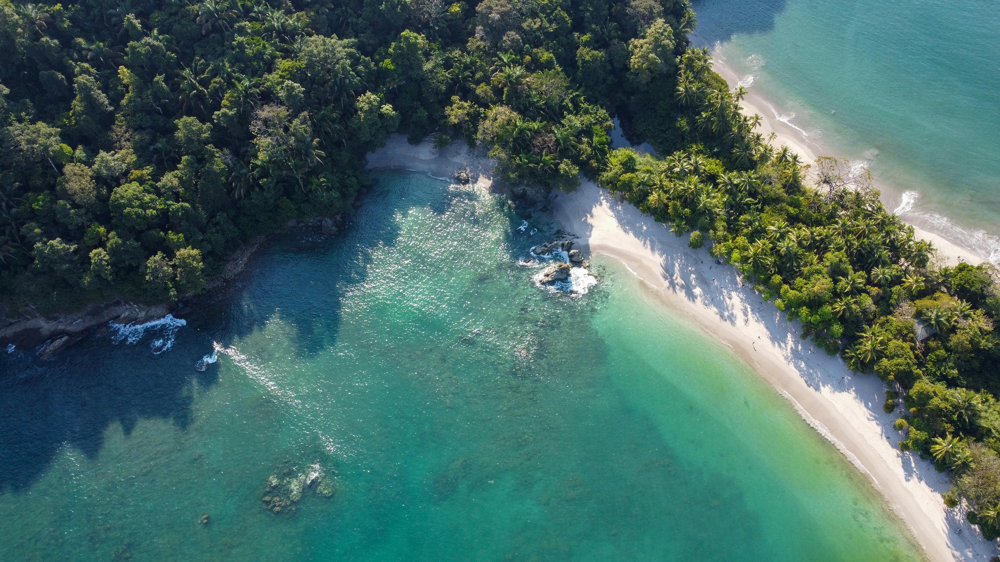

Relocating Individuals & Families
People considering a move to Costa Rica and wanting real guidance before committing.
Canada · U.S. · Europe ↔ Costa Rica
Costa Rica Bridge Advisory helps clients from Canada, the United States, and Europe explore, relocate, retire, invest, and navigate Costa Rica with trusted guidance, local context, and warm introductions to vetted professionals.
Designed for people considering major decisions involving travel, relocation, property, business, or long-term plans in Costa Rica.

Start Here
Whether you are considering relocation, retirement, property, business, or simply trying to understand Costa Rica more seriously, the best place to begin is with structured guidance before committing to bigger decisions.
Our Story
Costa Rica Bridge Advisory was built on a family connection between Canada and Costa Rica that began generations ago.
My great-grandfather, Dr. Alexander Fraser Pirie Booth, was a Canadian physician whose journey eventually brought him to Costa Rica. What began as travel became a turning point: he chose to remain in the country, build his life there, and become part of a story that would link both countries for generations to come.
That history created a lasting bridge between Canada and Costa Rica — one built not only on heritage, but on real experience, family roots, and a long-standing connection to the country.
Today, Costa Rica Bridge Advisory continues that bridge by helping international clients approach Costa Rica with more context, stronger local understanding, and trusted guidance before making important decisions.

What started as one man’s journey from Canada to Costa Rica became the beginning of a family story that still connects both countries today.

About the Founder
My name is Alexander Pirie. I was born in Costa Rica and later moved permanently to Toronto, where I built my life and professional career in Canada.
I am Costa Rican–Canadian, trilingual in English, Spanish, and French, and I understand both the cultural and practical gap that often exists between international clients and the realities on the ground in Costa Rica.
Through Costa Rica Bridge Advisory, I help clients from Canada, the United States, and Europe navigate Costa Rica more confidently by providing perspective, guidance, and trusted introductions when needed.
I do not provide legal, tax, immigration, or real estate services directly. My role is to help clients ask better questions, avoid costly mistakes, and connect with the right professionals for their situation.
Why I Built This
I created Costa Rica Bridge Advisory because I saw how easy it is for people to rely on vacation impressions, informal advice, or unverified contacts when making life-changing decisions about Costa Rica.
My goal is to provide a better starting point: independent guidance, better questions, and trusted connections before clients move forward.
Who We Help
People considering a move to Costa Rica and wanting real guidance before committing.
Clients evaluating Costa Rica for retirement, lifestyle, healthcare access, and long-term planning.
Individuals seeking better context before buying, investing, or entering local transactions.
People who want a deeper understanding of Costa Rica beyond a tourist experience.
Services
A focused first conversation to clarify your situation, goals, and best next steps.
For clients who need deeper discussion around regions, opportunities, and planning decisions.
For clients ready to move forward and needing stronger introductions and coordination support.
For serious clients planning a deeper Costa Rica exploration or higher-touch advisory support.
How It Works
Start with an Orientation Call or reach out with your situation.
We discuss your goals, concerns, timing, and what decision you are really trying to make.
You receive stronger context, clearer next steps, and a more strategic direction.
If needed, you can continue with deeper advisory support or trusted introductions.
Why Trust Us
Built from a real connection between Costa Rica and Canada, with a strong understanding of how international clients evaluate major decisions.
Warm introductions to vetted professionals when needed, instead of leaving clients to navigate unfamiliar systems alone.
The goal is not to sell legal or real estate services, but to help clients move forward more strategically and with more clarity.
Common Mistakes
FAQ
No. Costa Rica Bridge Advisory provides general guidance, coordination, and trusted introductions only. Specialized legal, tax, immigration, or financial advice should come from licensed professionals.
It is best for international clients who are seriously exploring Costa Rica for relocation, retirement, travel, property, business, or long-term lifestyle decisions.
Most people should begin with the Orientation Call. It is the safest and simplest first step before moving into deeper support.
Yes, when appropriate and depending on your situation, warm introductions may be made to trusted professionals in the broader network.
Contact
Start with a focused consultation before making bigger commitments.